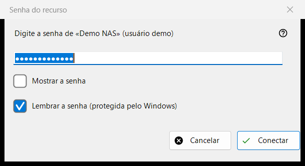
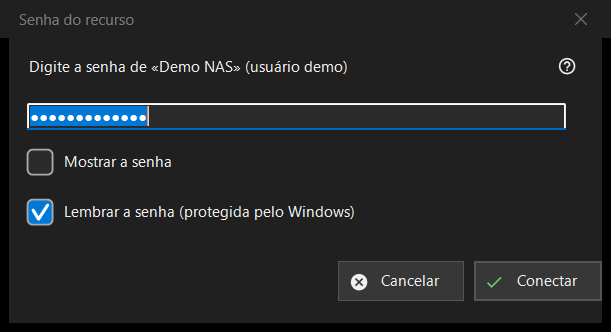

Senha do recurso
Finalidade
Pede a senha de um servidor ou de uma pasta de rede salvos. A janela se abre quando você abre um recurso cuja senha não está salva, quando a salva é recusada, quando uma pasta de destino em um servidor ou uma importação precisa da senha, e com o título «PIN do recurso» para uma pasta protegida por um PIN.


Nesta ordem
- Digite a senha; ela fica oculta e «Mostrar a senha» a revela.
- Decida se deixa marcada «Lembrar a senha (protegida pelo Windows)».
- Pressione «Conectar» (Enter) ou «Cancelar» (Esc) para parar.
Os elementos
A senha
O pedido nomeia o recurso e o usuário. A senha é usada exatamente como digitada, espaços incluídos. Uma caixa vazia dá «Digite a senha». «Mostrar a senha» começa desativado.
Lembrar a senha
A caixa vem marcada por padrão. Marcada, a senha é salva criptografada pelo Windows para a sua conta, e só depois que uma conexão confirma a senha; desmarcada, ela fica na memória apenas durante a execução atual. A caixa fica oculta onde a senha é salva de qualquer modo, por exemplo ao importar um arquivo de configurações, e no modo PIN.
Uma senha recusada
Se o servidor recusou a senha anterior, uma linha diz «A senha não foi aceita. Digite-a novamente.» e a janela pede de novo.
Modo PIN
Para uma pasta protegida por um PIN, o título é «PIN do recurso» e o pedido solicita o PIN do recurso nomeado. Não há caixa para lembrar, e um PIN recusado dá «O PIN foi recusado. Digite-o novamente.»